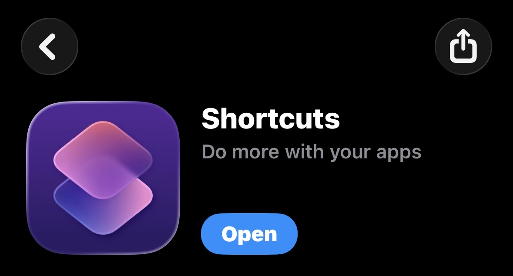
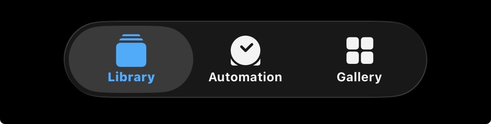
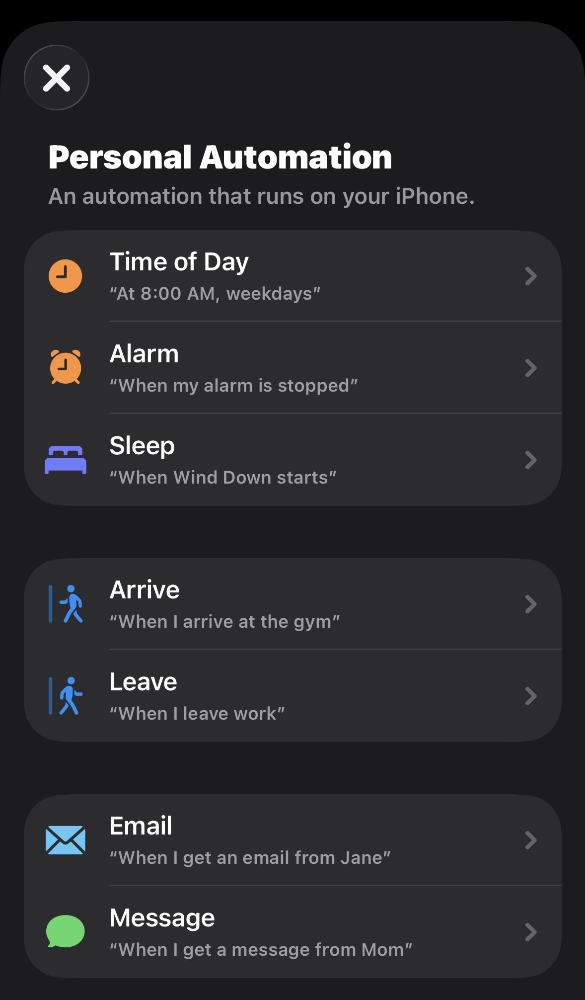
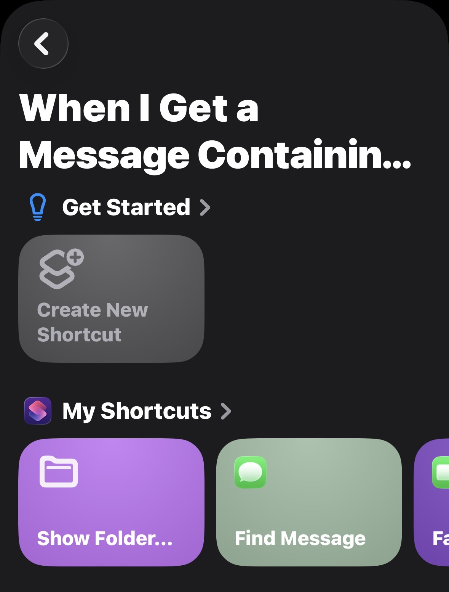
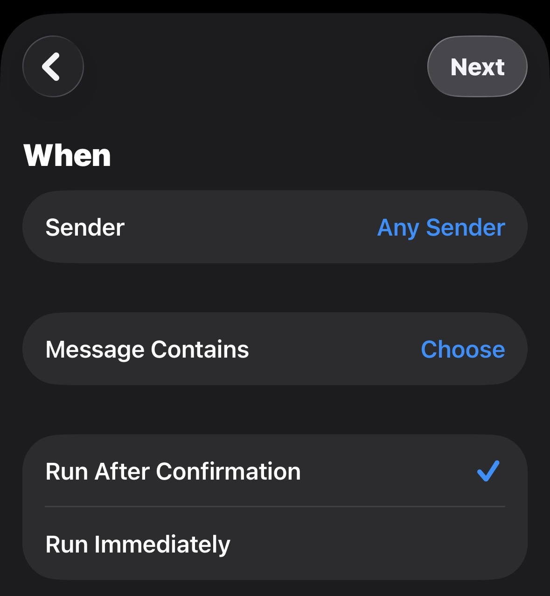
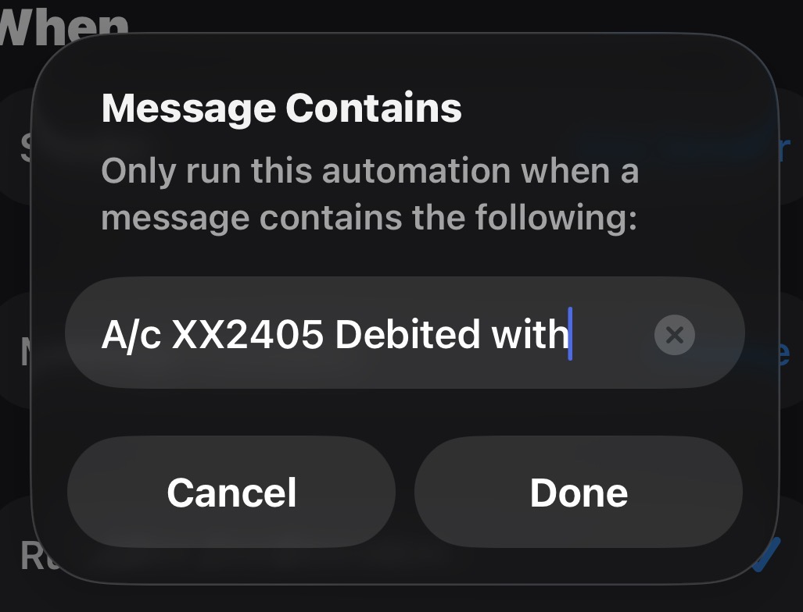
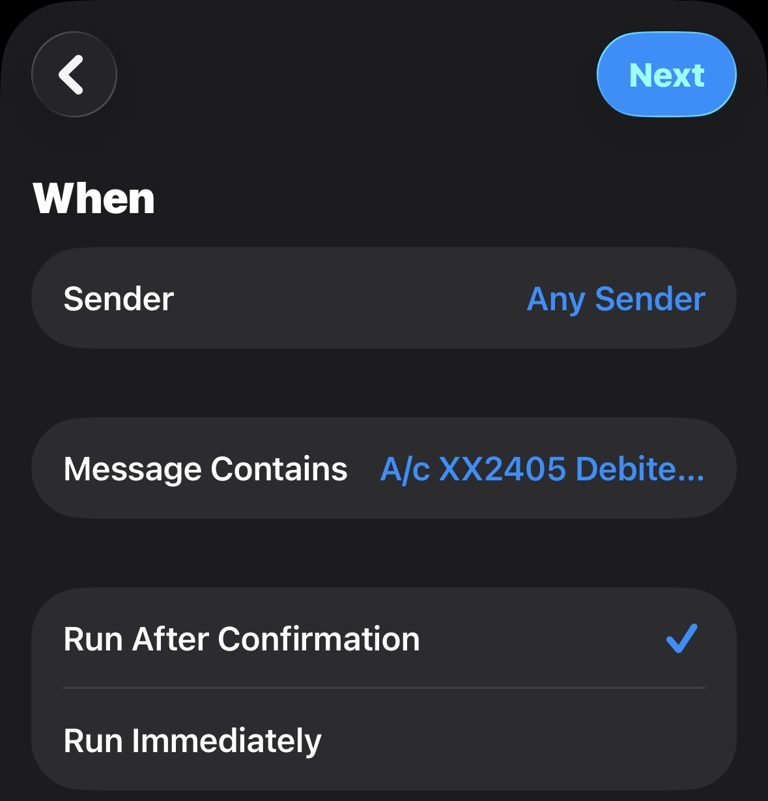
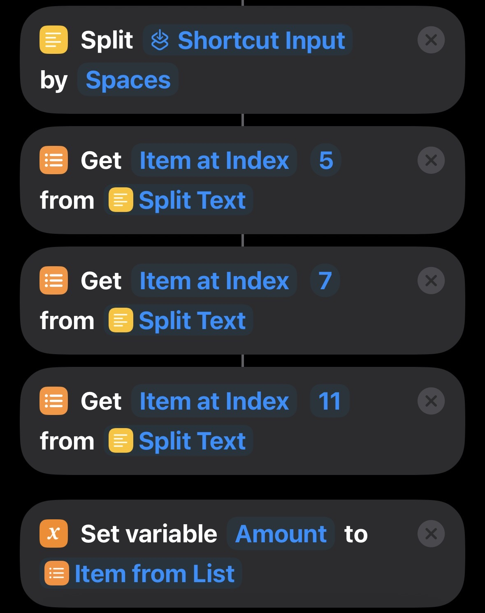
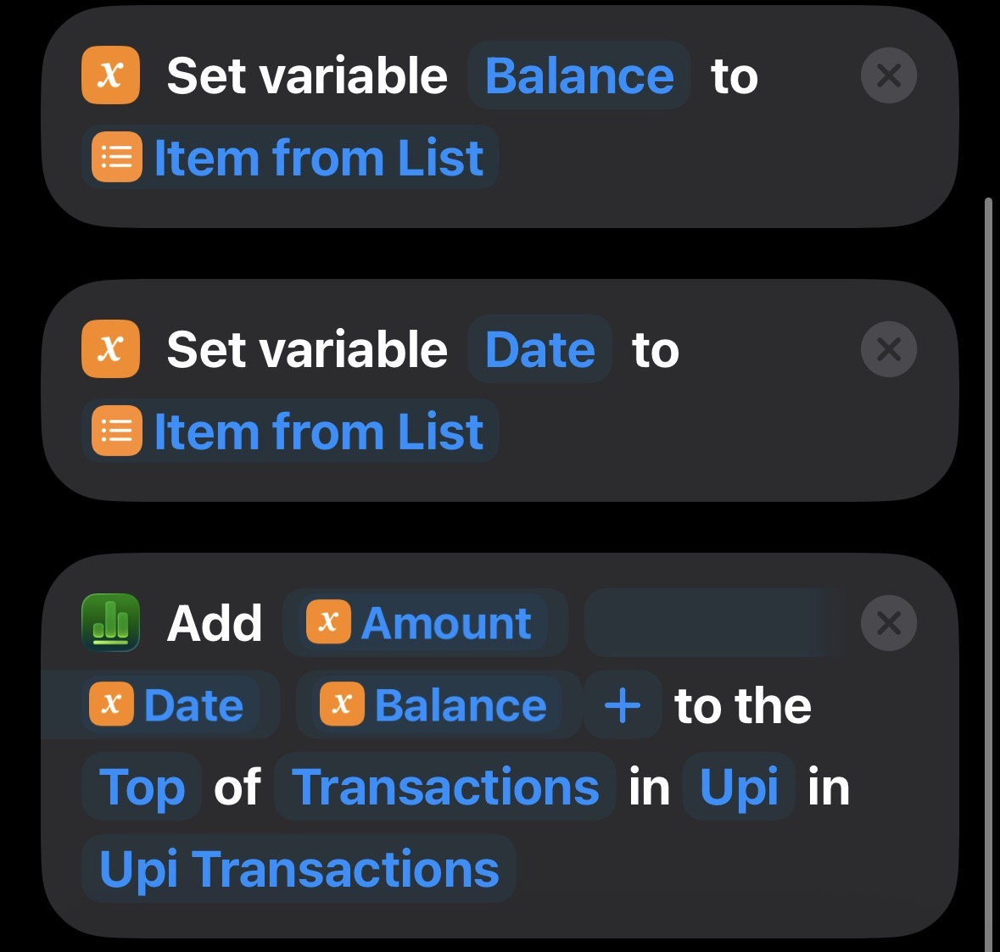

iPhone Shortcuts & Automations
Shortcuts & Automations
Small tech builds I put together to automate the boring parts of running a business — starting with the iPhone Shortcuts I actually use every day. Step-by-step, screenshot by screenshot.
Featured Shortcut · 01
The UPI Auto-Logger
Every debit SMS becomes a spreadsheet row automatically — no typing, no app switching.
Every time I pay for something via UPI, my bank fires off a debit SMS. I used to manually copy the amount and balance into a spreadsheet to track spending — until I built this Shortcut to do it for me. The moment a debit message lands, it silently parses out the amount, date and running balance, then adds a new row to a "Transactions" table. No app to open, no typing.
Below is exactly how it's built, screenshot by screenshot, so you can recreate it for your own bank's SMS format.
How It's Built
Part 1 — setting up the trigger.

Open the Shortcuts app
Shortcuts comes pre-installed on every iPhone. It's the engine behind every personal automation on iOS — no third-party app or subscription needed.

Head to the Automation tab
Shortcuts has three tabs: Library for your saved shortcuts, Gallery for templates, and Automation — where you build things that run themselves, triggered by an event rather than a tap.

Choose "Message" as the trigger
Personal Automations can fire on almost anything — time of day, arriving somewhere, an alarm stopping. For this build, the trigger is Message, since bank alerts arrive as SMS.

Start a new "When I Get a Message" automation
This opens the configuration screen where you define exactly which messages should fire the automation — critical, since you don't want this running on every text you receive.

Leave Sender as "Any Sender"
Banks send SMS from all kinds of alphanumeric IDs (e.g. AD-HDFCBK) that change by region and carrier. Rather than chase every sender ID, this filters on message content instead — far more reliable.

Set "Message Contains" to the bank's fixed phrase
Every debit SMS from my bank starts the same way: A/c XX2405 Debited with. That fixed substring is the filter — only messages containing this exact text will trigger the automation.
To adapt this for your bank: open one of your own debit SMS messages and find the phrase that appears in every single one — usually right before the amount.

Keep "Run After Confirmation" on
This shows a quick confirmation banner every time the automation is about to run, rather than acting silently. It's a good safety net while you're testing — you can switch to "Run Immediately" once you trust it.
Part 2 — Parsing the Message
Turning raw SMS text into three clean variables.
Dear Customer, A/c XX2405 Debited with ₹450.00 on 30-Aug-26. Avl Bal ₹12,340.50 — the actions below split this sentence apart to isolate just the numbers and date.

Split the message by spaces, then pick out words by position
The Split Text action breaks the whole SMS into a list of individual words. From there, Get Item at Index grabs specific words by their position in that list — index 5 for the amount, 7 for the date, 11 for the balance (the exact numbers depend on your bank's exact wording).
Each extracted value is stored with Set Variable so it can be reused in the final step.

Write the row to the spreadsheet
With Amount, Date and Balance all captured as variables, the final action adds them as a new row to the top of the "Transactions" table inside the "Upi" sheet — so the most recent transaction is always at the top.
More Shortcuts
New automations and tech breakdowns land here as they're built.
Next shortcut
slots in here
Next shortcut
slots in here
Next shortcut
slots in here
Want automations like this built for your business?
Tracking, reporting, or repetitive admin work — if it happens the same way every time, it can probably be automated.